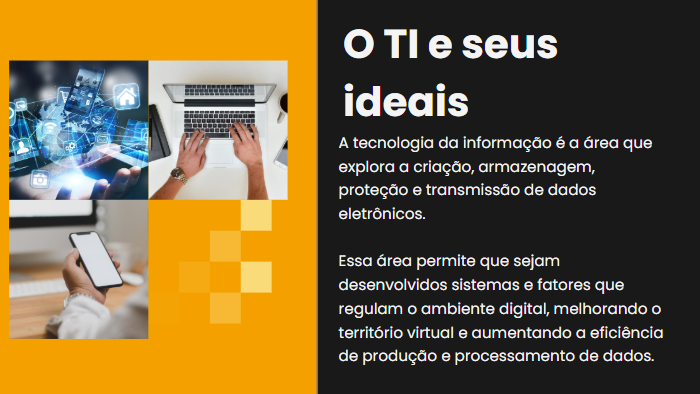
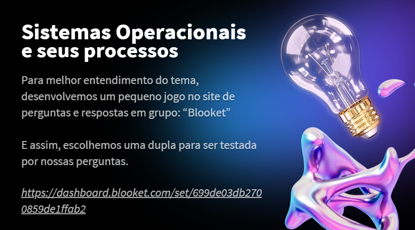
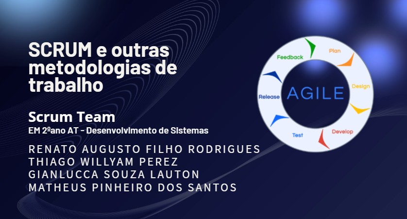
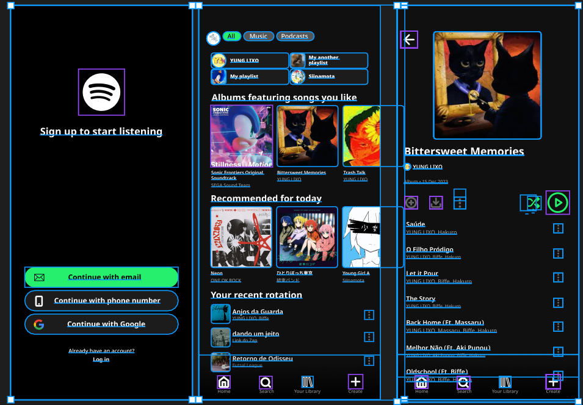
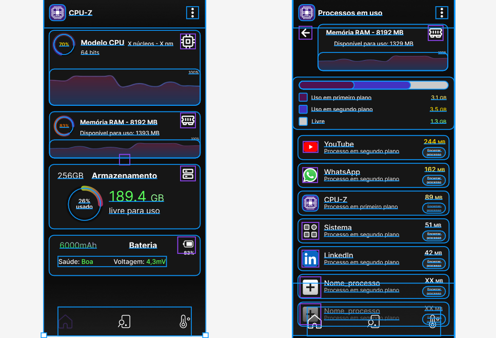
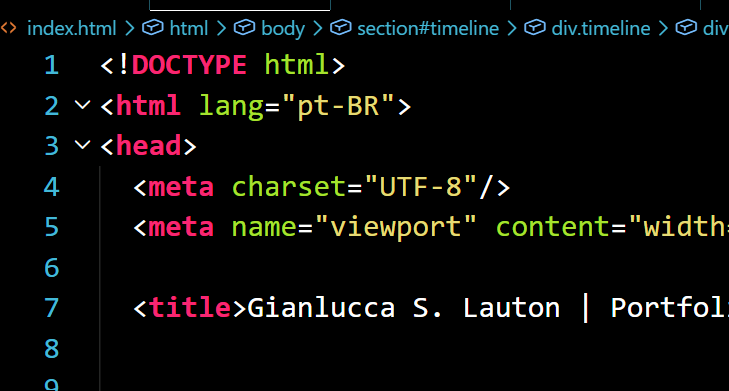
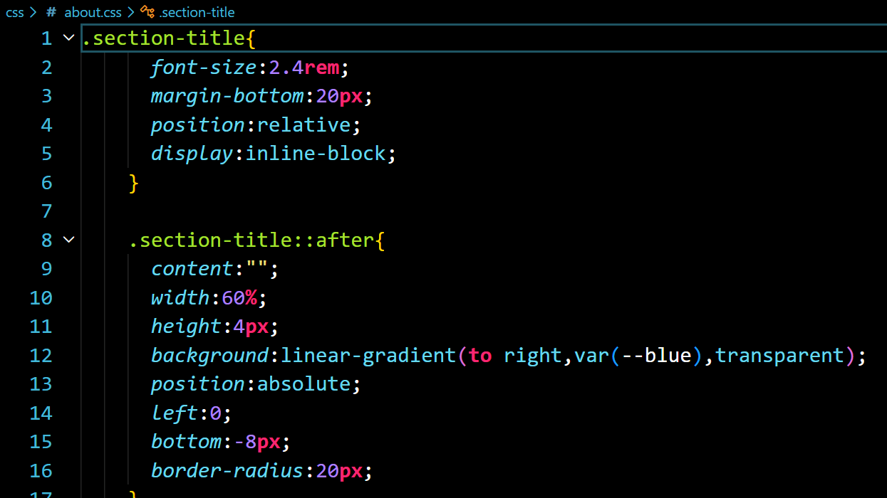
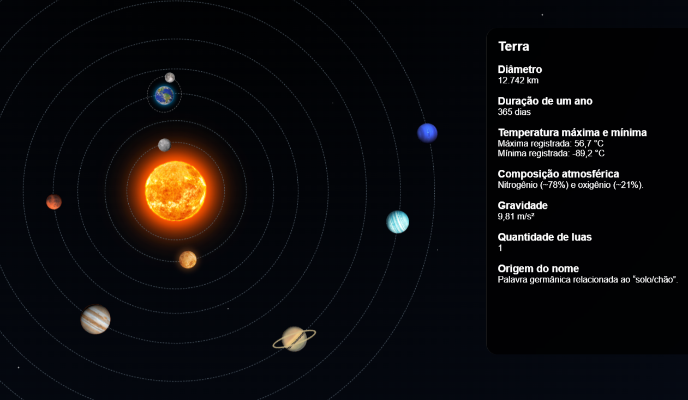

Linha do tempo

Tecnologia da Informação e princípios de desenvolvimento de software
Introdução aos conceitos fundamentais da Tecnologia da Informação e aos princípios básicos do desenvolvimento de software, abordando lógica, estrutura de sistemas, funcionamento de aplicações e a importância da tecnologia na resolução de problemas do dia a dia.

Sistemas operacionais e desenvolvimento front-end
Estudo dos fundamentos dos sistemas operacionais e introdução às bases do desenvolvimento Front-End, compreendendo estrutura de páginas web, organização de arquivos, interface visual e funcionamento do ambiente de desenvolvimento utilizado na criação de aplicações web.

Metodologias ágeis e Scrum Team na prática
Introdução às metodologias ágeis e aplicação prática do Scrum Team, com foco em organização de tarefas, trabalho em equipe, comunicação e desenvolvimento colaborativo de projetos de software de forma mais eficiente e dinâmica.

Prototipagem, seus processos e práticas
Introduções aos conceitos de prototipagem e dos processos utilizados no planejamento visual de interfaces, com foco na criação de layouts, organização de elementos e desenvolvimento de experiências mais intuitivas para usuários utilizando o Figma.

Redesign funcional de Interface e experiência do usuário
Desenvolvimento de um protótipo funcional focado na melhoria da interface e experiência do usuário de um aplicativo já existente aplicando conceitos de UI/UX, organização visual, acessibilidade e usabilidade para tornar a navegação mais intuitiva, moderna e eficiente.

Fundamentos do HTML e estrutura semântica
Introdução ao desenvolvimento web utilizando HTML e aos princípios de semântica na construção de páginas, explorando a organização correta dos elementos, estruturação de conteúdo e boas práticas para criação de sites mais acessíveis e bem organizados.

Fundamentos do CSS e estilização web
Introdução ao CSS e aos conceitos de estilização de páginas web, explorando cores, tipografia, espaçamento, posicionamento de elementos e criação de interfaces mais organizadas, modernas e visualmente atrativas.

Fundamentos de responsividade e adaptação de interfaces
Introdução aos conceitos de responsividade no desenvolvimento web, explorando técnicas para adaptação de interfaces em diferentes tamanhos de tela, dispositivos e resoluções, garantindo melhor experiência e usabilidade para o usuário.

Animações avançadas e interatividade com CSS
Aplicação de animações avançadas utilizando CSS, explorando transições, efeitos visuais, transformações e interações dinâmicas capazes de tornar interfaces web mais modernas, fluidas e visualmente atrativas para o usuário.